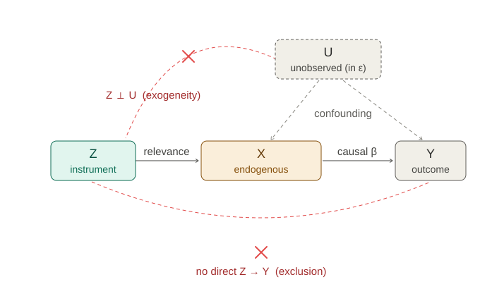

Endogeneity and Identification by Instrumental Variables
Lecture 9
0.1 Where we are
Where this lecture sits
For eight lectures, one assumption carried every consistency result: exogeneity, \(\E[\mathbf{x}_i\varepsilon_i]=\mathbf{0}\). This lecture asks what happens when it fails — when a regressor is correlated with the error. Least squares then breaks in the limit, not merely in small samples. Naming that failure is endogeneity; repairing it needs information from outside the regression — an instrument. At heart it is a question of identification: with exogeneity gone, is the parameter still recoverable?
The shift is subtle and it is the whole point. Nothing in Lectures 4–8 “breaks” as a piece of machinery: least squares still computes exactly what it always computed. What changes is whether that quantity is the one we want. We will see that OLS always estimates the linear projection of Lecture 2; exogeneity was what made the projection coincide with the parameter in the model. Drop it, and the two part ways — the estimator stays consistent, but for the wrong target. Recovering the right one is a question of identification, settled by an argument from outside the data, not by a test.
What least squares actually estimates
A refresher from Lecture 2 — with no assumptions beyond finite second moments.
Two levels, one idea. The population projection \(\bbeta^{*}\) lives in \(F\): it projects the random variable \(y\) onto the span of \(\mathbf{x}\) in the space of random variables with inner product \(\langle a,b\rangle=\E[ab]\), and its error \(u\) is orthogonal to \(\mathbf{x}\) by construction. OLS is the same projection in the sample: it projects the vector \(\bY\) onto the columns of \(\bX\) in \(\mathbb{R}^n\) under \(\langle a,b\rangle=\tfrac1n\sum_i a_ib_i\), giving \(\bb\) with \(\bX'\be=\mathbf{0}\). Same geometry, two inner products — one averaging over the distribution, one over the sample — and the LLN carries the sample moments to the population ones, so \(\bb\pto\bbeta^{*}\). None of this needs exogeneity; the next slide is about \(\bbeta^{*}\) failing to equal the structural \(\bbeta\).
1 Part I · Structural vs. projection
1.1 Endogeneity
When the projection is not the parameter
Definition 1 (Endogeneity) Posit a structural equation \(y_i=\mathbf{x}_i'\bbeta+\varepsilon_i\) in which \(\bbeta\) is defined by economics — the causal effect — not by fit. A regressor is endogenous for \(\bbeta\) when it is correlated with the structural error, equivalently when the structural parameter and the projection disagree: \[\E[\mathbf{x}_i\varepsilon_i]\neq\mathbf{0}\iff\bbeta^{*}\neq\bbeta.\] It is a property relative to a structural equation — the same variable can be exogenous in one model and endogenous in another.
A concrete case: the return to schooling
Regress log weekly earnings on years of education (plus experience and controls). OLS gives a return of about 7% per year — clean and precise. Is it the causal return?
Why OLS is inconsistent for \(\bbeta\)
With \(\bb=(\bX'\bX)^{-1}\bX'\bY\) and the structural \(\bY=\bX\bbeta+\beps\),
\[\bb =\bbeta+\Big(\tfrac1n\textstyle\sum_i\mathbf{x}_i\mathbf{x}_i'\Big)^{-1}\Big(\tfrac1n\textstyle\sum_i\mathbf{x}_i\varepsilon_i\Big) \;\pto\;\underbrace{\bbeta+\big(\E[\mathbf{x}_i\mathbf{x}_i']\big)^{-1}\E[\mathbf{x}_i\varepsilon_i]}_{=\;\bbeta^{*}}.\]
This is the same identity as Lecture 5’s \(\bb=\bbeta+(\bX'\bX/n)^{-1}(\bX'\beps/n)\) — only now the extra term does not vanish. Least squares is still consistent — for \(\bbeta^{*}\). The failure is not statistical but a mismatch of targets: the quantity we can estimate (\(\bbeta^{*}\)) is not the quantity we want (\(\bbeta\)). It is not a finite-sample bias the CLT smooths away, and not something robust standard errors cure — a tight interval around the wrong centre is worse than a loose one. Everything that follows replaces the offending \(\tfrac1n\sum_i\mathbf{x}_i\varepsilon_i\) with a term that does vanish, so the limit is \(\bbeta\).
The DGP, from here on
The population is \(\{(y_i,\mathbf{x}_i,\mathbf{z}_i)\}\), i.i.d. from \(F\). The structural equation is \(y_i=\mathbf{x}_i'\bbeta+\varepsilon_i\), but now \(\E[\mathbf{x}_i\varepsilon_i]\neq\mathbf{0}\) for at least one regressor. Alongside \(\mathbf{x}\) there is a further variable \(\mathbf{z}\) — the instrument, developed in Part II — whose role is to supply the identifying information the structural equation lacks on its own.
1.2 Four sources of endogeneity
Four roads to \(\bbeta^{*}\neq\bbeta\)
Omitted variables
The long model is \(y_i=\mathbf{x}_i'\bbeta+w_i\gamma+u_i\), with \(u\) orthogonal to both \(\mathbf{x}\) and \(w\). Omit \(w\) and it falls into the error, \(\varepsilon_i=w_i\gamma+u_i\), giving \(\E[\mathbf{x}_i\varepsilon_i]=\gamma\,\E[\mathbf{x}_i w_i]\).
Step by step. OLS targets the projection \(\bbeta^{*}=(\E[\mathbf{x}_i\mathbf{x}_i'])^{-1}\E[\mathbf{x}_i y_i]\), so compute the cross-moment it uses, substituting the long model for \(y_i\): \[\E[\mathbf{x}_i y_i]=\E\big[\mathbf{x}_i(\mathbf{x}_i'\bbeta+w_i\gamma+u_i)\big] =\E[\mathbf{x}_i\mathbf{x}_i']\,\bbeta+\E[\mathbf{x}_i w_i]\,\gamma+\underbrace{\E[\mathbf{x}_i u_i]}_{=\,0}.\] Pre-multiplying by \((\E[\mathbf{x}_i\mathbf{x}_i'])^{-1}\), \[\bbeta^{*}=\bbeta+\gamma\,(\E[\mathbf{x}_i\mathbf{x}_i'])^{-1}\E[\mathbf{x}_i w_i].\] The second term is the omitted-variable bias: the coefficient of a regression of the omitted \(w\) on the included \(\mathbf{x}\), scaled by \(w\)’s own effect \(\gamma\). It is exactly the \(\bbeta^{*}-\bbeta\) of the previous slide, with the endogenous component named, \(\E[\mathbf{x}\varepsilon]=\gamma\E[\mathbf{x} w]\) — and it vanishes only if \(w\) is irrelevant or orthogonal to every included regressor.
The long-vs-short coefficient gap \(\gamma\,(\E[\mathbf{x}\mathbf{x}'])^{-1}\E[\mathbf{x} w]\) is the omitted-variable bias of Lecture 3. Omitted-variable bias is endogeneity, seen from the regression table.
Measurement error: attenuation
We regress on a noisy measurement \(\tilde x_i=x_i^{*}+u_i\) of the true regressor \(x_i^{*}\), with \(u_i\) independent of \(x_i^{*}\) and \(\varepsilon_i\). The structural model is \(y_i=x_i^{*}\beta+\varepsilon_i\), so in terms of \(\tilde x_i\) the error becomes \(\varepsilon_i-\beta u_i\) and
\[\plim b=\beta^{*} =\beta\,\frac{\Var(x_i^{*})}{\Var(x_i^{*})+\Var(u_i)} =\frac{\beta}{1+\Var(u_i)/\Var(x_i^{*})}\;<\;\beta.\]
Step by step. Write the structural model through the observed \(\tilde x_i\): \(y_i=x_i^{*}\beta+\varepsilon_i=(\tilde x_i-u_i)\beta+\varepsilon_i=\tilde x_i\beta+v_i\), with \(v_i:=\varepsilon_i-\beta u_i\).
Why \(\beta^{*}=\beta+\Cov(\tilde x_i,v_i)/\Var(\tilde x_i)\). There are two ways to write \(y\) in terms of \(\tilde x\). The projection decomposition \(y=\tilde x\,\beta^{*}+r\) has \(r\perp\tilde x\) by construction, which is what defines \(\beta^{*}=\Cov(\tilde x,y)/\Var(\tilde x)\). The structural decomposition \(y=\tilde x\,\beta+v\) instead has \(\Cov(\tilde x,v)\neq0\). Substitute the structural form into that definition and use bilinearity of \(\Cov\): \[\Cov(\tilde x,y)=\Cov(\tilde x,\;\tilde x\beta+v)=\beta\,\Var(\tilde x)+\Cov(\tilde x,v) \;\Rightarrow\; \beta^{*}=\beta+\frac{\Cov(\tilde x,v)}{\Var(\tilde x)}.\] It is the master identity (Lecture 5, scalar form): regress \(y\) on any \(w\) with \(y=w\beta+v\) and the projection slope is \(\beta+\Cov(w,v)/\Var(w)\) — the contamination vanishing iff the regressor is orthogonal to the equation’s own error.
The attenuation. With \(u\) independent of \(x^{*}\) and \(\varepsilon\) (all mean zero), \[\Cov(\tilde x_i,v_i)=\E\big[(x_i^{*}+u_i)(\varepsilon_i-\beta u_i)\big]=-\beta\,\E[u_i^2]=-\beta\sigma_u^2, \qquad \Var(\tilde x_i)=\sigma_{x^{*}}^2+\sigma_u^2,\] all other cross-terms vanishing by independence. Hence \[\beta^{*}=\beta-\frac{\beta\sigma_u^2}{\sigma_{x^{*}}^2+\sigma_u^2}=\beta\,\frac{\sigma_{x^{*}}^2}{\sigma_{x^{*}}^2+\sigma_u^2}.\] The noise \(u\) sits in the regressor \(\tilde x\) and in the error \(v\) with opposite signs, so \(\Cov(\tilde x,v)<0\) — the regressor is correlated with its own error, and \(\beta^{*}\) shrinks toward \(0\). It is endogeneity, not a small-sample effect.
This is the inconsistent estimator from the Monte Carlo taxonomy (Demo 2): the sampling distribution tightened on the wrong value, \(0.5\) rather than \(\beta=1\). There we saw it; here we derive it.
Sample selection
Even when \(\mathbf{x}\) is exogenous in the full population, keeping only the units that made it into the sample can make the in-sample error correlated with \(\mathbf{x}\).
Where it bites — four guises, one mechanism.
- Self-selection — Heckman’s canonical case: a wage is observed only for those who work, and the choice to work turns on the same unobservables (ability, reservation wage) that drive the wage. The wage equation is selected on \(\varepsilon\).
- Attrition — a tracked panel loses units non-randomly (sicker patients leave a health study, poorer households drop out). Key point: the exits are observed, so they leave a trace you can model and correct.
- Survivorship — you see only the survivors, usually with no trace of the departed (mutual-fund returns over still-open funds overstate performance; incumbent-firm studies miss the failures). Attrition is its observed, longitudinal form; pure survivorship is harder precisely because the missing never appear. The canonical image is Abraham Wald’s WWII bombers — the same Wald as the Wald test, at Columbia’s Statistical Research Group: armour the planes where the returning ones are not hit, since those struck there never came back.
- Truncation / censoring — the sample is cut by the outcome itself: loan performance only for approved applicants, income top-coded, durations only for completed spells.
In each case, conditioning on survival or selection injects a term correlated with \(\mathbf{x}\) into the error — made precise next.
Step by step. Suppose in the full population \(\mathbf{x}\) is exogenous, \(\E[\varepsilon_i\mid\mathbf{x}_i]=0\), so OLS would be fine. But we observe \(i\) only when a selection indicator \(s_i=1\), and selection depends on the error — model it as \(s_i=\mathbf{1}\{\mathbf{x}_i'\boldsymbol{\gamma}+\eta_i>0\}\) with \((\varepsilon_i,\eta_i)\) correlated, \(\rho\neq0\). The regression we can actually run uses the selected conditional mean, \[\E[y_i\mid\mathbf{x}_i,\,s_i=1]=\mathbf{x}_i'\bbeta+\underbrace{\E[\varepsilon_i\mid\mathbf{x}_i,\,\eta_i>-\mathbf{x}_i'\boldsymbol{\gamma}]}_{\neq\,0\ \text{when}\ \rho\neq0}.\] Under joint normality that last term is \(\rho\,\sigma_\varepsilon\,\lambda(\mathbf{x}_i'\boldsymbol{\gamma})\), the inverse Mills ratio. So inside the selected sample \(y_i=\mathbf{x}_i'\bbeta+\rho\sigma_\varepsilon\,\lambda(\mathbf{x}_i'\boldsymbol{\gamma})+\text{error}\), and omitting \(\lambda\) is an omitted-variable problem: because \(\lambda\) is a function of \(\mathbf{x}\), the selected sample has \(\E[\mathbf{x}_i\varepsilon_i\mid s_i=1]\neq\mathbf{0}\) and OLS is inconsistent. Selection bias is omitted-variable bias, with the selection correction as the missing regressor (Heckman) — cured by modelling the selection or instrumenting it.
Simultaneity
Price and quantity are set together — demand and supply hold at once: \[q_i=\alpha p_i+\varepsilon_i^{d}\ (\text{demand}),\qquad q_i=\delta p_i+\varepsilon_i^{s}\ (\text{supply}).\]
Step by step. Both equations hold at equilibrium, so equate them, \(\alpha p+\varepsilon^{d}=\delta p+\varepsilon^{s}\), and solve for price — the reduced form \[p_i=\frac{\varepsilon_i^{s}-\varepsilon_i^{d}}{\alpha-\delta}.\] Substitute this into the demand equation and collect over \(\alpha-\delta\) to get the reduced form of \(q\): \[q_i=\alpha p_i+\varepsilon_i^{d}=\frac{\alpha(\varepsilon_i^{s}-\varepsilon_i^{d})+(\alpha-\delta)\varepsilon_i^{d}}{\alpha-\delta}=\frac{\alpha\varepsilon_i^{s}-\delta\varepsilon_i^{d}}{\alpha-\delta}.\] Routing through the supply equation gives the identical \(q_i\) — as it must, since the two curves meet at a single equilibrium. Both \(p\) and \(q\) are functions of both structural shocks, so the regressor \(p\) is correlated with the demand error. With \(\varepsilon^{d},\varepsilon^{s}\) independent, mean zero, variances \(\sigma_d^2,\sigma_s^2\), \[\Cov(p_i,\varepsilon_i^{d})=-\frac{\sigma_d^2}{\alpha-\delta}\neq0,\] so OLS of \(q\) on \(p\) — meant to estimate the demand slope \(\alpha\) — is inconsistent, with \(\plim b=\Cov(p,q)/\Var(p)=(\alpha\sigma_s^2+\delta\sigma_d^2)/(\sigma_s^2+\sigma_d^2)\). When demand shocks dominate (\(\sigma_d^2\gg\sigma_s^2\)) the equilibria line up along supply; when supply shocks dominate, along demand — OLS traces a curve that is neither.
Why an instrument fixes it. Add a variable \(z_i\) that enters supply but not demand and is uncorrelated with \(\varepsilon^{d}\) — say an input cost: \(q_i=\delta p_i+\theta z_i+\varepsilon_i^{s}\), demand unchanged. Now \(z\) shifts the supply curve while demand stays put, so the equilibria it generates slide along the demand curve — exactly the variation needed to measure \(\alpha\). The estimator is \(b_{\text{IV}}=\Cov(z_i,q_i)/\Cov(z_i,p_i)\pto\alpha\): the effect of \(z\) on quantity over its effect on price. This is Philip Wright’s (1928) original device and the reason the method is called instrumental variables — \(z\) is the instrument that moves one curve to reveal the other.
2 Part II · Identification by an instrument
2.1 What identification means
When is a parameter identified?
Definition 2 (Identification) A parameter is identified if it is a unique function of the distribution of the observables. The projection \(\bbeta^{*}\) is always identified — it is an explicit function of population moments. The structural \(\bbeta\) is identified only if the data pin it down uniquely; under endogeneity the structural equation alone does not, so we must add information.
To pin down \(\bbeta\) (\(k\) unknowns) you need \(k\) valid moment conditions \(\E[\mathbf{w}(y-\mathbf{x}'\bbeta)]=\mathbf{0}\) — a solvable linear system: \[\E[\mathbf{w}\,y]=\E[\mathbf{w}\,\mathbf{x}']\,\bbeta,\qquad\text{unique }\bbeta\iff \rank\big(\E[\mathbf{w}\mathbf{x}']\big)=k.\]
Identification as a linear system. Every moment condition \(\E[\mathbf{w}(y-\mathbf{x}'\bbeta)]=\mathbf{0}\) is, once expanded, a linear system in the unknown \(\bbeta\): \[\mathbf{A}\bbeta=\mathbf{c},\qquad \mathbf{A}=\E[\mathbf{w}\mathbf{x}'],\quad \mathbf{c}=\E[\mathbf{w}y].\] “\(\bbeta\) is identified” means this system pins \(\bbeta\) down uniquely at the true value — and that needs two separate things, easy to confuse:
- The right equation (exogeneity). \(\mathbf{c}=\mathbf{A}\bbeta\) must hold at the structural \(\bbeta\) — the instrument must be clean, \(\E[\mathbf{w}\varepsilon]=\mathbf{0}\).
- A unique solution (rank). \(\mathbf{A}=\E[\mathbf{w}\mathbf{x}']\) must have full column rank \(k\).
Why OLS fails — and which condition it loses. Take \(\mathbf{w}=\mathbf{x}\). Then \(\mathbf{A}=\E[\mathbf{x}\mathbf{x}']\) is \(k\times k\) and full rank whenever there is no perfect collinearity — so OLS does not lose the rank condition; its system has a unique solution. What it loses is exogeneity. The honest right-hand side is \[\mathbf{c}=\E[\mathbf{x}y]=\E[\mathbf{x}\mathbf{x}']\bbeta+\E[\mathbf{x}\varepsilon],\] so the structural \(\bbeta\) does not solve \(\mathbf{A}\bbeta=\mathbf{c}\); the unique solution is instead \(\bbeta^{*}=\bbeta+(\E[\mathbf{x}\mathbf{x}'])^{-1}\E[\mathbf{x}\varepsilon]\). OLS solves a well-posed system — the wrong one.
The “too few equations” view. Insisting on \(\bbeta\) from \((y,\mathbf{x})\) alone means reading \(\E[\mathbf{x}y]=\E[\mathbf{x}\mathbf{x}']\bbeta+\E[\mathbf{x}\varepsilon]\) as \(k\) equations in \(2k\) unknowns — the \(k\) slopes \(\bbeta\) and the \(k\) bias terms \(\E[\mathbf{x}\varepsilon]\). Under-determined: infinitely many \((\bbeta,\text{bias})\) pairs fit the same moments, so \(\bbeta\) cannot be separated from the bias — not identified. OLS forces an answer by decreeing the bias to be zero. The missing ingredient is information from outside the equation in \((y,\mathbf{x})\) — what the next slides introduce and call an instrument.
2.2 What an instrument is
Two conditions
Definition 3 (Instrumental variable) A variable \(\mathbf{z}_i\) is a valid instrument for an endogenous \(\mathbf{x}_i\) if it satisfies
- Relevance: \(\Cov(\mathbf{z}_i,\mathbf{x}_i)\neq 0\) — it moves the endogenous regressor; and
- Exogeneity (exclusion): \(\E[\mathbf{z}_i\varepsilon_i]=\mathbf{0}\) — it is unrelated to the error, affecting \(y\) only through \(\mathbf{x}\).
Relevance and exclusion, in words
Think of the instrument as a lever on \(\mathbf{x}\).
Relevance is testable because it is a statement about observables — regress \(\mathbf{x}\) on \(\mathbf{z}\) and look at the first-stage fit. Exclusion is not, because it is a statement about the unobserved error: it asks whether \(\mathbf{z}\) has any path to \(y\) other than through \(\mathbf{x}\), and the data cannot see paths through things it does not record. So a credible instrument rests on a design argument — \(\mathbf{z}\) is as good as randomly assigned, affecting \(y\) only by shifting \(\mathbf{x}\) — which is why the next slide draws the two conditions as the two edges a valid instrument must not have.
The IV causal diagram

2.3 Exogeneity as a moment condition
The condition that defines the estimator
Write exclusion as an expectation involving the parameter: \[\E\big[\mathbf{z}_i(y_i-\mathbf{x}_i'\bbeta)\big]=\E[\mathbf{z}_i\varepsilon_i]=\mathbf{0}.\] This single vector equation is the estimator — replace the expectation by its sample analogue and solve. For OLS the instrument is \(\mathbf{x}\) itself (\(\E[\mathbf{x}_i\varepsilon_i]=\mathbf{0}\)); when \(\mathbf{x}\) is endogenous we swap in \(\mathbf{z}\). This is the moment condition that returns, generalised to \(\E[g(W_i,\theta)]=\mathbf{0}\), as the foundation of GMM in Lecture 11.
Which columns are endogenous — and what goes into \(\bZ\)
Split the \(k\) regressors by their relation to the error, then build the instrument vector to match: \[\mathbf{x}_i=\begin{pmatrix}\mathbf{x}_{1i}\\[2pt]\mathbf{x}_{2i}\end{pmatrix},\qquad \underbrace{\E[\mathbf{x}_{1i}\varepsilon_i]=\mathbf{0}}_{k_1\text{ exogenous}},\quad \underbrace{\E[\mathbf{x}_{2i}\varepsilon_i]\neq\mathbf{0}}_{k_2\text{ endogenous}},\qquad k=k_1+k_2,\] \[\mathbf{z}_i=\begin{pmatrix}\mathbf{x}_{1i}\\[2pt]\mathbf{z}_{2i}\end{pmatrix},\qquad \underbrace{\mathbf{x}_{1i}}_{\text{included }(\ell_1=k_1)},\quad \underbrace{\mathbf{z}_{2i}}_{\text{excluded }(\ell_2)},\qquad \ell=\ell_1+\ell_2,\ \ \ell_1=k_1.\]
Reading the partition. Each structural regressor carries a label we rarely make explicit: it is either exogenous (uncorrelated with \(\varepsilon\)) or endogenous (correlated). Collect the \(k_1\) exogenous columns in \(\mathbf{x}_{1i}\) — the intercept and the honest controls — and the \(k_2\) endogenous ones in \(\mathbf{x}_{2i}\), so \(k=k_1+k_2\). Only \(\mathbf{x}_2\) is the problem; \(\mathbf{x}_1\) is already clean. (We write \(k_2\) for the number of endogenous regressors rather than \(L\), to keep it visually apart from \(\ell\), the number of instruments.)
Why \(\mathbf{x}_1\) instruments itself. An instrument must be exogenous and relevant. An exogenous regressor already satisfies \(\E[\mathbf{x}_1\varepsilon]=0\), and it is trivially relevant for itself. So there is no reason to look for an external instrument for it — it is its own instrument. This is why the instrument vector \(\mathbf{z}\) always contains the full set of exogenous regressors (the included instruments); we only hunt for extra variables to cover the endogenous block.
The excluded instruments. For the \(k_2\) endogenous columns we bring in \(\ell_2\) external variables \(\mathbf{z}_2\) — “excluded” because they are kept out of the structural equation (that absence is the exclusion restriction). They must move \(\mathbf{x}_2\) (relevance) without touching \(\varepsilon\) (exogeneity). The full instrument vector is \(\mathbf{z}=(\mathbf{x}_1',\mathbf{z}_2')'\), of dimension \(\ell=\ell_1+\ell_2\), with \(\ell_1=k_1\) included instruments and \(\ell_2\) excluded ones.
Order condition — the count. The moment system \(\E[\mathbf{z}\varepsilon]=\mathbf{0}\) has \(\ell\) equations for \(k\) unknowns, so we need \(\ell\ge k\). Because the \(k_1\) exogenous slots line up automatically (\(\mathbf{x}_1\) appears on both sides), this collapses to \(\ell_2\ge k_2\): at least as many excluded instruments as endogenous regressors.
- \(\ell_2=k_2\) (⟺ \(\ell=k\)): exactly identified. \(\bZ'\bX\) is \(k\times k\), square; invert it and \(\bb_{\text{IV}}=(\bZ'\bX)^{-1}\bZ'\bY\).
- \(\ell_2>k_2\) (⟺ \(\ell>k\)): over-identified. More moment conditions than parameters; \(\bZ'\bX\) is \(\ell\times k\) and cannot be inverted — 2SLS combines the surplus instruments efficiently (next slide).
- \(\ell_2<k_2\) (⟺ \(\ell<k\)): under-identified. Some endogenous column has no instrument reaching it — no consistent estimator exists.
Order is necessary, not sufficient. Counting right does not guarantee identification: two excluded instruments that both move only the first endogenous regressor leave the second unreached. The clean statement is the rank condition \(\rank(\E[\mathbf{z}\mathbf{x}'])=k\) from Part II — the order condition \(\ell_2\ge k_2\) is just its necessary byproduct.
2.4 Reduced form and first stage
The first stage
The first stage regresses the endogenous regressor on the instruments, \[\mathbf{x}_i=\boldsymbol{\Pi}'\mathbf{z}_i+\mathbf{v}_i,\qquad \boldsymbol{\Pi}=(\E[\mathbf{z}\mathbf{z}'])^{-1}\E[\mathbf{z}\mathbf{x}'].\] Substituting into the structural equation gives the reduced form of \(y\), \[y_i=\mathbf{z}_i'(\boldsymbol{\Pi}\bbeta)+(\mathbf{v}_i'\bbeta+\varepsilon_i),\] a regression of \(y\) on the exogenous \(\mathbf{z}\) — consistently estimable by OLS.
Why the reduced form is OLS-estimable — and the structural equation is not. Write the composite error as \(u_i=\mathbf{v}_i'\bbeta+\varepsilon_i\). OLS of \(y\) on \(\mathbf{z}\) is consistent iff \(\E[\mathbf{z}u]=\mathbf{0}\): \[\E[\mathbf{z}u]=\E[\mathbf{z}\mathbf{v}']\bbeta+\E[\mathbf{z}\varepsilon].\]
- \(\E[\mathbf{z}\mathbf{v}']=\mathbf{0}\) is not an assumption. The first stage \(\mathbf{x}=\boldsymbol{\Pi}'\mathbf{z}+\mathbf{v}\) is the linear projection of \(\mathbf{x}\) on \(\mathbf{z}\): \(\boldsymbol{\Pi}=(\E[\mathbf{z}\mathbf{z}'])^{-1}\E[\mathbf{z}\mathbf{x}']\) is defined so that the residual \(\mathbf{v}=\mathbf{x}-\boldsymbol{\Pi}'\mathbf{z}\) is orthogonal to \(\mathbf{z}\) — the very property OLS residuals have against their own regressors (Lecture 2).
- \(\E[\mathbf{z}\varepsilon]=\mathbf{0}\) is the assumption: exogeneity / exclusion — instrument validity.
Together \(\E[\mathbf{z}u]=\mathbf{0}\), so OLS on \(\mathbf{z}\) consistently estimates \(\boldsymbol{\lambda}=\boldsymbol{\Pi}\bbeta\).
\(\boldsymbol{\lambda}=\boldsymbol{\Pi}\bbeta\) is a genuine product — the chain rule along \(\mathbf{z}\to\mathbf{x}\to y\). The reduced-form coefficient is the projection of \(y\) on \(\mathbf{z}\): \[\boldsymbol{\lambda}=(\E[\mathbf{z}\mathbf{z}'])^{-1}\E[\mathbf{z}y] =(\E[\mathbf{z}\mathbf{z}'])^{-1}\big(\E[\mathbf{z}\mathbf{x}']\bbeta+\E[\mathbf{z}\varepsilon]\big) =\boldsymbol{\Pi}\bbeta+(\E[\mathbf{z}\mathbf{z}'])^{-1}\E[\mathbf{z}\varepsilon].\] Under exclusion the last term vanishes and \(\boldsymbol{\lambda}=\boldsymbol{\Pi}\bbeta\) exactly — the \(\ell\times k\) first-stage matrix times the \(k\times1\) structural vector, with \(\lambda_j=\sum_m\Pi_{jm}\beta_m\). It is the chain rule \(\partial y/\partial\mathbf{z}=(\partial\mathbf{x}/\partial\mathbf{z})(\partial y/\partial\mathbf{x})\): the total \(\mathbf{z}\to y\) effect factors into “\(\mathbf{z}\) moves \(\mathbf{x}\)” (\(\boldsymbol{\Pi}\)) composed with “\(\mathbf{x}\) moves \(y\)” (\(\bbeta\)) — precisely because, by exclusion, \(\mathbf{z}\) reaches \(y\) only through \(\mathbf{x}\). Had exclusion failed, the extra \(\E[\mathbf{z}\varepsilon]\) term would break the factorisation. In the exactly-identified case this is mirrored in-sample: \(\hat{\boldsymbol{\lambda}}=\hat{\boldsymbol{\Pi}}\,\bb_{\text{IV}}\), i.e. \(\bb_{\text{IV}}=\hat{\boldsymbol{\Pi}}^{-1}\hat{\boldsymbol{\lambda}}\).
The subtlety — why \(\mathbf{x}\) fails where \(\mathbf{z}\) works. The errors \(\mathbf{v}\) and \(\varepsilon\) are correlated; that is the endogeneity: \[\Cov(\mathbf{x},\varepsilon)=\Cov(\boldsymbol{\Pi}'\mathbf{z}+\mathbf{v},\varepsilon)=\boldsymbol{\Pi}'\underbrace{\Cov(\mathbf{z},\varepsilon)}_{=\,\mathbf{0}}+\Cov(\mathbf{v},\varepsilon)=\Cov(\mathbf{v},\varepsilon)\neq\mathbf{0}.\] So the composite error \(u\) is correlated with \(\mathbf{x}\) — regressing \(y\) on \(\mathbf{x}\) stays biased — yet \(u\) is orthogonal to \(\mathbf{z}\). The reduced form launders the endogeneity by swapping the dirty regressor \(\mathbf{x}\) for the clean \(\mathbf{z}\): \(\mathbf{z}\) is orthogonal to \(\mathbf{v}\) (projection) and to \(\varepsilon\) (exogeneity), hence to the whole error. That is the instrument’s entire job.
3 Part III · The IV and 2SLS estimators
3.1 Exactly identified
The IV estimator
Definition 4 (IV estimator (exactly identified)) When \(\ell=k\) (exactly identified: \(\ell_2=k_2\) excluded instruments for the \(k_2\) endogenous regressors, with \(\mathbf{x}_1\) instrumenting itself), the sample moment condition \(\tfrac1n\sum_i\mathbf{z}_i(y_i-\mathbf{x}_i'\mathbf{b})=\mathbf{0}\) solves uniquely: \[\bb_{\text{IV}}=(\bZ'\bX)^{-1}\bZ'\bY,\qquad\text{scalar: } b_{\text{IV}}=\frac{\Cov(z,y)}{\Cov(z,x)}=\frac{\lambda}{\Pi}.\] The scalar form is literally reduced form \(\div\) first stage — \(\lambda=\) effect of \(z\) on \(y\), \(\Pi=\) effect of \(z\) on \(x\).
Step by step.
1 — From moment to estimator. The population condition is \(\E[\mathbf{z}(y-\mathbf{x}'\bbeta)]=\mathbf{0}\). Replace the expectation by its sample average and solve: \(\tfrac1n\bZ'(\bY-\bX\mathbf{b})=\mathbf{0}\Rightarrow\bZ'\bY=\bZ'\bX\mathbf{b}\Rightarrow\bb_{\text{IV}}=(\bZ'\bX)^{-1}\bZ'\bY\), provided \(\bZ'\bX\) is square (exactly identified) and invertible (relevance).
2 — Consistency (and the regularity it needs). Substitute the structural \(\bY=\bX\bbeta+\beps\): \[\bb_{\text{IV}}=(\bZ'\bX)^{-1}\bZ'(\bX\bbeta+\beps)=\bbeta+\Big(\tfrac{\bZ'\bX}{n}\Big)^{-1}\Big(\tfrac{\bZ'\beps}{n}\Big).\] Passing to the limit is not automatic — it stands on three legs:
- (LLN) with i.i.d. sampling and finite second moments, \(\tfrac1n\bZ'\bX\pto\mathbf{Q}_{zx}\equiv\E[\mathbf{z}\mathbf{x}']\) and \(\tfrac1n\bZ'\beps\pto\E[\mathbf{z}\varepsilon]\);
- (regularity / rank) \(\mathbf{Q}_{zx}\) is finite and nonsingular — this is relevance. Matrix inversion is continuous only at invertible matrices, so the rank condition is precisely what lets the continuous mapping theorem give \(\big(\tfrac1n\bZ'\bX\big)^{-1}\pto\mathbf{Q}_{zx}^{-1}\);
- (exogeneity) \(\E[\mathbf{z}\varepsilon]=\mathbf{0}\).
By Slutsky the three combine: \[\bb_{\text{IV}}\pto\bbeta+\mathbf{Q}_{zx}^{-1}\,\E[\mathbf{z}\varepsilon]=\bbeta+\mathbf{Q}_{zx}^{-1}\mathbf{0}=\bbeta.\] Same shape as the OLS identity (Lecture 5), but now the error term dies — because the instrument, not \(x\), is clean. Drop the rank condition and \(\mathbf{Q}_{zx}^{-1}\) ceases to exist: the plim is not even defined (weak-instrument territory, Lecture 10).
3 — Why \(\lambda/\Pi\). In the scalar case \(b_{\text{IV}}=\Cov(z,y)/\Cov(z,x)\). The reduced-form slope is \(\lambda=\Cov(z,y)/\Var(z)\) and the first-stage slope is \(\Pi=\Cov(z,x)/\Var(z)\), so \(b_{\text{IV}}=\dfrac{\lambda\,\Var(z)}{\Pi\,\Var(z)}=\dfrac{\lambda}{\Pi}\) — the \(\Var(z)\) cancels, and IV is reduced form over first stage.
3.2 Overidentified
Two-stage least squares
With \(\ell>k\) instruments (\(\ell_2>k_2\) excluded ones), each gives a valid IV — but one at a time wastes the others. Any linear combination of the \(\mathbf{z}\)’s is still a valid instrument; the best (most correlated with \(\mathbf{x}\)) is the first-stage OLS fit. Hence literally two OLS stages: \[\textbf{Stage 1: } \hat{\bX}=\bP_{\bZ}\bX,\quad \bP_{\bZ}=\bZ(\bZ'\bZ)^{-1}\bZ';\qquad \textbf{Stage 2: } \bb_{\text{2SLS}}=(\hat{\bX}'\hat{\bX})^{-1}\hat{\bX}'\bY.\] Since \(\bP_{\bZ}\) is symmetric and idempotent (\(\hat{\bX}'\hat{\bX}=\bX'\bP_{\bZ}\bX\), \(\hat{\bX}'\bY=\bX'\bP_{\bZ}\bY\)): \[\bb_{\text{2SLS}}=(\bX'\bP_{\bZ}\bX)^{-1}\bX'\bP_{\bZ}\bY.\]
Where the formula comes from. Stage 1 is OLS of each column of \(\bX\) on \(\bZ\); the fitted values are \(\hat{\bX}=\bZ\hat{\boldsymbol{\Pi}}=\bZ(\bZ'\bZ)^{-1}\bZ'\bX=\bP_{\bZ}\bX\), with \(\bP_{\bZ}\) the projection onto the column space of \(\bZ\). Stage 2 regresses \(\bY\) on \(\hat{\bX}\): \(\bb_{\text{2SLS}}=(\hat{\bX}'\hat{\bX})^{-1}\hat{\bX}'\bY\). Using \(\bP_{\bZ}'=\bP_{\bZ}\) and \(\bP_{\bZ}\bP_{\bZ}=\bP_{\bZ}\) gives \(\hat{\bX}'\hat{\bX}=\bX'\bP_{\bZ}\bX\) and \(\hat{\bX}'\bY=\bX'\bP_{\bZ}\bY\), hence \(\bb_{\text{2SLS}}=(\bX'\bP_{\bZ}\bX)^{-1}\bX'\bP_{\bZ}\bY\) — no “second regression” needs to be run separately.
Exactly identified (\(\ell=k\)): 2SLS is IV. Now \(\bX'\bZ\), \(\bZ'\bZ\), \(\bZ'\bX\) are all square, invertible \(k\times k\) matrices (relevance). Write it out with \(\bP_{\bZ}=\bZ(\bZ'\bZ)^{-1}\bZ'\): \[\bb_{\text{2SLS}}=\big(\bX'\bZ(\bZ'\bZ)^{-1}\bZ'\bX\big)^{-1}\bX'\bZ(\bZ'\bZ)^{-1}\bZ'\bY.\] Apply \((\mathbf{A}\mathbf{B}\mathbf{C})^{-1}=\mathbf{C}^{-1}\mathbf{B}^{-1}\mathbf{A}^{-1}\) to the first factor, then cancel: \[\bb_{\text{2SLS}}=(\bZ'\bX)^{-1}(\bZ'\bZ)(\bX'\bZ)^{-1}\;\bX'\bZ(\bZ'\bZ)^{-1}\bZ'\bY =(\bZ'\bX)^{-1}\underbrace{(\bZ'\bZ)(\bZ'\bZ)^{-1}}_{\bI}\bZ'\bY=(\bZ'\bX)^{-1}\bZ'\bY=\bb_{\text{IV}}.\] The pieces \((\bX'\bZ)^{-1}\bX'\bZ=\bI\) and \((\bZ'\bZ)(\bZ'\bZ)^{-1}=\bI\) cancel: with as many instruments as regressors there is nothing to combine, so projecting \(\bX\) onto \(\bZ\) is the same as using \(\bZ\) directly. Only when \(\ell>k\) — where \(\bZ'\bX\) is not square and cannot be inverted — do IV and 2SLS genuinely differ, and the projection \(\bP_{\bZ}\) is what optimally pools the surplus instruments.
What the two stages actually do
The first stage extracts the exogenous part of \(\bX\): \(\hat{\bX}=\bP_{\bZ}\bX\) keeps only the variation in \(\bX\) that is driven by \(\bZ\), and that part is — by exclusion — orthogonal to \(\varepsilon\). The second stage then regresses \(y\) on this cleaned regressor, so the endogenous variation (the part correlated with the error) is thrown away before estimation. 2SLS trades information for honesty: it uses only the slice of \(\bX\)’s variation it can trust.
Estimating the two OLS regressions separately gives the right point estimate but the wrong standard errors — the second stage treats \(\hat{\bX}\) as data and ignores that it was estimated. Always use a 2SLS command (ivreg, feols(... | ...), ivregress), which corrects the variance.
4 Part IV · Endogenous dummies and treatment effects
A binary endogenous regressor
Let \(D_i\in\{0,1\}\) be an endogenous treatment (people select into it) and \(z_i\in\{0,1\}\) a binary instrument. The IV estimator becomes the Wald estimator, \[b_{\text{IV}}=\frac{\bar y_{\,z=1}-\bar y_{\,z=0}}{\bar D_{\,z=1}-\bar D_{\,z=0}} =\frac{\text{reduced-form effect of }z\text{ on }y}{\text{first-stage effect of }z\text{ on }D}.\]
Oversubscribed KIPP charter schools admit by lottery: winning the lottery \(z\in\{0,1\}\) is randomly assigned, a textbook-clean instrument for actually attending \(D\in\{0,1\}\) (not every winner enrols, and losers rarely attend). 2SLS of test scores on attendance, instrumented by the lottery offer, estimates KIPP’s effect — a LATE for the students whose enrolment the lottery moves (Angrist et al. 2012). (Angrist–Krueger’s quarter-of-birth returns in Lecture 10 as the weak-instrument cautionary tale.)
4.1 Heterogeneous effects: the LATE
Who does the instrument move?
Label each unit by how its treatment would respond to the binary instrument — its potential treatments \((D_i(0),D_i(1))\). Read through the Vietnam draft (Angrist 1990): \(z=\) draft-eligible (random lottery number), \(D=\) served, \(y=\) earnings.
| \(D_i(0)\,\backslash\,D_i(1)\) | \(D_i(1)=0\) | \(D_i(1)=1\) |
|---|---|---|
| \(D_i(0)=0\) | never-taker | complier |
| \(D_i(0)=1\) | defier | always-taker |
The Wald ratio is a LATE
Under random \(z\), exclusion, relevance, and monotonicity (no defiers), the Wald ratio identifies the average treatment effect on compliers: \[\frac{\E[y\mid z=1]-\E[y\mid z=0]}{\E[D\mid z=1]-\E[D\mid z=0]}=\E[\,y_1-y_0\mid\text{complier}\,]\equiv\textbf{LATE}.\]
Sketch. Split \(\E[y\mid z]\) by response type, with shares \(\pi_c,\pi_a,\pi_n\) (compliers, always-, never-takers; monotonicity kills defiers). Always-takers have \(D=1\) under both values of \(z\) and never-takers \(D=0\) under both; by random assignment their outcome distributions do not depend on \(z\), so they cancel in the numerator. Only compliers change \(D\) from \(0\) to \(1\) as \(z:0\to1\), contributing \(\pi_c\,\E[y_1-y_0\mid\text{complier}]\); the denominator is the same \(\pi_c\). The ratio is the complier average effect — the LATE of Imbens–Angrist (1994) (Imbens and Angrist 1994). With constant effects LATE \(=\) ATE and the distinction disappears; it is effect heterogeneity that makes IV local. Compliers are latent — we never see both \(D_i(0)\) and \(D_i(1)\) for the same person, so we cannot tag them individually — yet their average effect is point-identified.
5 Summary
What to take away
- OLS always estimates the projection \(\bbeta^{*}\); endogeneity (\(\E[\mathbf{x}\varepsilon]\neq\mathbf{0}\), i.e. \(\bbeta^{*}\neq\bbeta\)) makes it inconsistent for the structural \(\bbeta\) — wrong target, not small-sample bias.
- Four sources, one symptom: omitted variables, measurement error, selection, simultaneity.
- Recovering \(\bbeta\) is identification, not estimation: an instrument with relevance (\(\Cov(\mathbf{z},\mathbf{x})\neq0\)) and exclusion (\(\E[\mathbf{z}\varepsilon]=\mathbf{0}\)) makes \(\bbeta\) a unique function of observable moments.
- Exactly identified (\(\ell=k\), i.e. \(\ell_2=k_2\)) → \(\bb_{\text{IV}}=(\bZ'\bX)^{-1}\bZ'\bY\); overidentified (\(\ell>k\)) → 2SLS projects \(\bX\) onto \(\bZ\).
- IV buys consistency; the price — efficiency, and total reliance on an untestable exclusion — is next lecture.
Hansen, Econometrics, ch. 12; Greene, ch. 8.